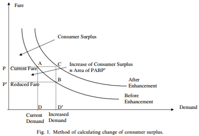
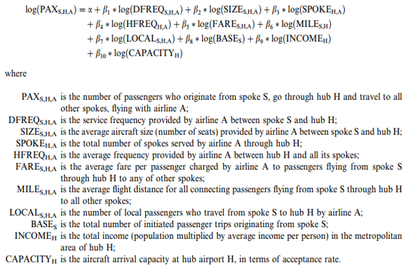
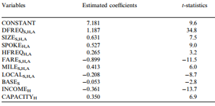
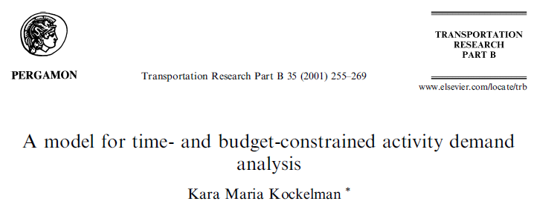
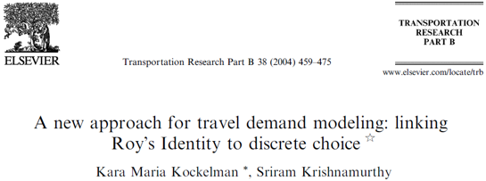
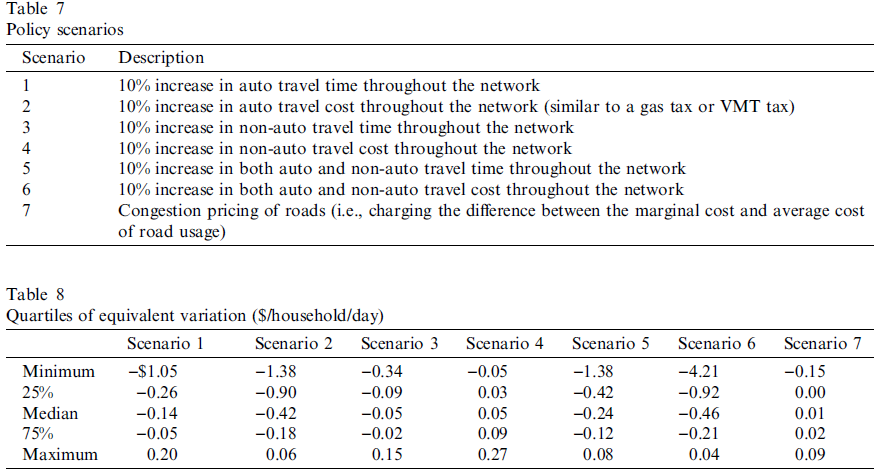
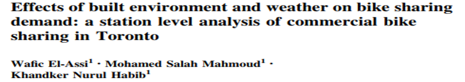
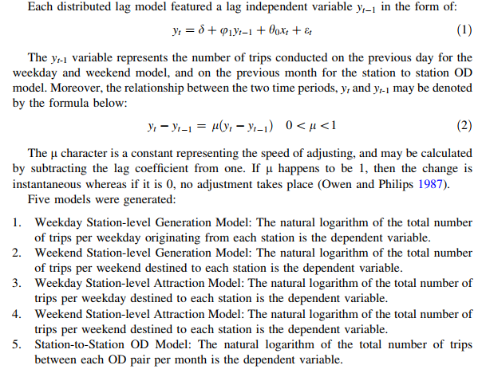

Lecture 3 - Aggregate Demand Models
ENCI707: Engineering Demand and Policy Analysis
Outline
- Some econometric tools used in demand modeling:
- Normal regression
- Lognormal regression
- Ordered regression
- Count regression
- Aggregrate transportation demand models
Crash Course in Statistical Models
Normal Regression
\[y_i = \beta_0 + \sum_j \beta_j x_j + \epsilon_j, \epsilon_j \text{ is } \sim N(0,\sigma^2)\]
- Equivalently \(y_i\) is \(\sim N(\beta_0 + \sum_j \beta_j x_j, \sigma^2)\)
- Estimation
- Least-squares: minimize squared residuals
- Maximum likelihood by normal pdf \[L_i = \frac{1}{\sigma}\phi\left(\frac{y_i-\beta_0-\sum_j \beta_j x_j}{\sigma}\right)\]
- Regression to mean is deterministic for expected value of most regression model expressed as f(covariates)
- Probabilistic application through simulation
Functions of Random Variables
- From probability theory courses …. transformation of random error term to random variable via Jacobian transformation
Log-Normal Regression
\[\ln(y_i) = \beta_0 + \sum_j \beta_j x_j + \epsilon_j, \epsilon_j \text{ is } \sim N(0,\sigma^2)\]
Equivalently \(\ln(y_i)\) is \(\sim N(\beta_0 + \sum_j \beta_j x_j, \sigma^2)\)
Estimation
- Least-squares: minimize squared residuals
- Maximum likelihood by normal pdf \[L_i = \frac{1}{y_i \sigma}\phi\left(\frac{\ln(y_i)-\beta_0-\sum_j \beta_j x_j}{\sigma}\right)\]
- \(y_i\) must be positive (i.e., non-negative and non-zero)
Probit Regression
\[y_i^* = \beta_0 + \sum_j \beta_j x_j + \epsilon_j, \epsilon_j \text{ is } \sim N(0,\sigma^2)\]
Observed value is binary (0/1) \[Pr(y_i=1) = \pi_i = \Phi \left((\beta_0 + \sum_j \beta_j x_j)/\sigma \right)\] \[Pr(y_i=0) = 1 - \pi_i = 1 - \Phi \left((\beta_0 + \sum_j \beta_j x_j)/\sigma \right) = \Phi \left( - (\beta_0 + \sum_j \beta_j x_j)/\sigma \right)\]
Estimation by Maximum likelihood by normal cdf \[L_i = \pi_i^{\delta_i}(1-\pi_i)^{1-\delta_i} \text{ }\delta_i=1 \text{, if }y_i=1, 0 \text{ otherwise}\]
- Variance normalized to 1 (homogeneous) or parameterized without a constant (heterogeneous)
Logistic Regression
- Observed value is binary (0/1) with \(\epsilon_i\) being logistically distributed this time \[Pr(y_i=1) = \pi_i = \frac{\exp (\beta_0 + \sum_j \beta_j x_j)}{1 + \exp(\beta_0 + \sum_j \beta_j x_j)}\] \[Pr(y_i=0) = 1 - \pi_i = 1 - \pi_i = \frac{1}{1 + \exp(\beta_0 + \sum_j \beta_j x_j)}\]
- Estimation by Maximum likelihood \[L_i = \pi_i^{\delta_i}(1-\pi_i)^{1-\delta_i} \text{ }\delta_i=1 \text{, if }y_i=1, 0 \text{ otherwise}\]
- Interpretation (scale compounded parameters): \[logit(\pi_i) = \text{log of odds ratio} = \ln\left(\frac{\pi_i}{1-\pi_i}\right)=\beta_0 + \sum_j \beta_j x_j\]
Probit/Logistic Regression
- Binary outcome model can be used to model market shares in aggregate demand models
- Pseudo-likelihood function \[L_i = \pi_i^{y_i}(1-\pi_i)^{1-y_i}\]
- \(i\) is the aggregation unit (e.g., zones, groups, etc.)
- \(y_i\) is the share (proportion) of \(y\) in unit \(i\)
Ordered Regression
- We often have ordinal measures for which we cannot assume that the categories are equally spaced (if they were then we likely would use linear regression model)
- Questionnaire items for opinions
- Data that were originally measured at the interval/ratio level then grouped (lumped) into ordered categories (age, income)
- Qualitative measures that are not truly continuous
- Ordered regression is a useful tool for above situations
Ordered Regression
- An important criteria for the ordered probability model is that the results remain consistent regardless of how the dependent variable is cut into categories
- This means, if a new category is added to an existing variable, the variable’s coefficients should remain the same regardless of the number of categories in the dependent variable
Ordered Regression
- Consider the latent variable model \[y_i^* = \beta x_i + \epsilon_i\] \[y_i = j \text{ if } \tau_{j-1} \leq y_i^* \leq \tau_j, j \in \{0,1,2\dots J\}\]
- We have \(J\) levels and \((J-1)\) cut points represented by \(\tau\). End categories are 0 and \(J\) for which values of cut points will be \(-\infty\) and \(+\infty\), respectively.
- For example, if \(J=4\) \[y_i = 1 \text{ if } -\infty < y_i^* < \tau_1\] \[y_i = 2 \text{ if } \tau_1 \leq y_i^* < \tau_2\] \[y_i = 3 \text{ if } \tau_2 \leq y_i^* < \tau_3\] \[y_i = 4 \text{ if } \tau_3 \leq y_i^* < +\infty\]
Ordered Regression
- Now, if we replace the latent variable by corresponding utility functions \[Pr(y_i=j|x_i) = Pr(\tau_{j-1} \leq \beta x_i + \epsilon < \tau_j)\] \[Pr(y_i=j|x_i) = Pr(\tau_{j-1} - \beta x_i \leq \epsilon < \tau_j - \beta x_i)\] \[Pr(y_i=j|x_i) = \int_{-\infty}^{\tau_j - \beta x_i} f(\epsilon_i) d\epsilon_i - \int_{-\infty}^{\tau_{j-1} - \beta x_i} f(\epsilon_i) d\epsilon_i\] \[Pr(y_i=j|x_i) = F(\tau_j - \beta x_i) - F(\tau_{j-1} - \beta x_i)\]
Ordered Regression
- If we assume \(\epsilon_i\) follows a normal distribution with zero mean and \(\sigma^2\) variance, then
- Ordered Probit Regression \[Pr(y_i=j|_i = \Phi((\tau_j - \beta x_i)/\sigma) - \Phi((\tau_{j-1} - \beta x_i)/\sigma) \]
- Typically, set \(\sigma=1\)
- If we assume \(\epsilon_i\) follows a Type I Extreme Value distribution with scale \(\mu\)
- Ordered Logit Regression \[Pr(y_i=j|x_i) = \frac{\exp(\mu(\tau_j - \beta x_i))}{1 + \exp(\mu(\tau_j - \beta x_i))} - \frac{\exp(\mu(\tau_{j-1} - \beta x_i))}{1 + \exp(\mu(\tau_{j-1} - \beta x_i))}\]
- Typically assume \(\mu=1\)
Ordered Regression
- Ordered Probit model \[Pr(y_i=1|x_i) = \Phi(\tau_1 - \beta x_i) - 0\] \[Pr(y_i=2|x_i) = \Phi(\tau_2 - \beta x_i) - \Phi(\tau_1 - \beta x_i)\] \[Pr(y_i=3|x_i) = \Phi(\tau_3 - \beta x_i) - \Phi(\tau_2 - \beta x_i)\] \[Pr(y_i=4|x_i) = 1 - \Phi(\tau_3 - \beta x_i)\]
- Ordered Logit model \[Pr(y_i=1|x_i) = \exp(\tau_1 - \beta x_i)/(1 + \exp(\tau_1 - \beta x_i)) - 0\] \[Pr(y_i=2|x_i) = \exp(\tau_2 - \beta x_i)/(1 + \exp(\tau_2 - \beta x_i)) - \exp(\tau_1 - \beta x_i)/(1 + \exp(\tau_1 - \beta x_i))\] \[Pr(y_i=3|x_i) = \exp(\tau_3 - \beta x_i)/(1 + \exp(\tau_3 - \beta x_i)) - \exp(\tau_2 - \beta x_i)/(1 + \exp(\tau_2 - \beta x_i))\] \[Pr(y_i=3|x_i) = 1 - \exp(\tau_3 - \beta x_i)/(1 + \exp(\tau_3 - \beta x_i))\]
Ordered Regression
- Ordered Probit vs Ordered Logit model: Parameters of Probit and Logit are not comparable
- Normal error with unit variance in an Ordered Probit: variance of ordered regression, \(\sigma^1=1\)
- Type I Extreme Value has a variance, \(\sigma^2=\pi^2/6\mu^2\). So, with a unit scale (\(\mu=1\)) in an Ordered Logit, the variance \(\sigma^2=\pi^2/6\)
Ordered Regression
- Estimation: likelihood function \[L(y|x,\beta,\theta = \prod_{i=1}^N\prod_{j=1}^J \left(F(\tau_j - \beta x_i) - F(\tau_{j-1} - \beta x_i) \right)^{z_{ij}}\] \[z_{ij}=1 \text{ if } y_i = j\] \[z_{ij}=0 \text{ otherwise }\]
- Useful to think of \(\tau_j\) as intercepts
- Standard practice is to think of intercept as baseline probability when \(x=0\)
Zero-Inflated Ordered Regression
- Observed data have overwhelming portion with zero values: zero-inflation \[y_i = 0 \text{, no further regression model}\] \[y_i > 0 \text{, } Pr(y_i=j|x)\]
- Estimation: Maximum likelihood \[y_i=0 -> \eta_i \leq \sum_k \gamma z_k\] \[y_i > 0, -> \eta_i > \sum_k \gamma_k z_k \text{ & } Pr(y_i=j|x)\] \[L_i = \Phi(\sum_k \gamma_k z_k)^{y_i=0} \times \left(\Phi(-\sum_k \gamma_k z_k)(F(\tau_j - \beta x_i) - F(\tau_{j-1} - \beta x_i))\right)^{y_i=j}\]
- 2 models: model of binary zero/non-zero \(y\) & ordered regression model
Count Variable Regression
- Count (\(y_i\)) of events occuring randomly & uniformly in tmie with constant expected rate of occurence \[Pr(y_i) = \frac{\lambda^{y_i}e^{-\lambda}}{y_i!} \text{, } E[y_i] = V[y_i] = \lambda \text{, } \lambda = exp(\sum_j \beta_j x_j)\]
- Likelihood function for estimation \[L(y_i|x,\beta) = Pr(y_i)\]
- Issues with Poisson model
- Heterogeneity can violate constant expected rate assumption
- Upper limit of count data can exist - can cause violation of \(E[y_i] = V[y_i]\) assumption and cause over/under dispersion
Poisson Regression with Heterogeneity
- Existence of over-dispersion requires correction
- Assume additional gamma heterogeneity \[\theta^* = exp(\sum_j \beta_j x_j + u) = exp(\sum_j \beta_j x_j) \times exp(u)\]
- Consider a positive distribution for \(u\), a Gamma distribution with mean 1 and variance \(1/\theta=\alpha\)
- Results in a Negative Binomial regression model \[Pr(y_i) = \frac{\Gamma(\theta + y_i)}{\Gamma(y_i +1)\Gamma(\theta)}r_i^{y_i}(1-r_i)^{\theta} \text{, } r_i = \frac{exp(\sum_j \beta_j x_j)}{exp(\sum_j \beta_j x_j) + \theta}\]
- Likelihood function for estimation: \(L(y_i|x,\beta,\theta) = Pr(y_i)\), \(\theta\) is the dispersion parameter, which should be a positive value
Zero-Inflated Count Regression
- Observed data have overwhelming portion with zero values: zero-inflation \[y_i = 0 \text{, no further regression model}\] \[y_i > 0 \text{, } Pr(y_i=j|x) \text{Poisson or Negative Binomial}\]
- Estimation: Maximum likelihood \[y_i=0 -> \eta_i \leq \sum_k \gamma z_k\] \[y_i > 0, -> \eta_i > \sum_k \gamma_k z_k \text{ & } Pr(y_i=j|x)\] \[L_i = \Phi(\sum_k \gamma_k z_k)^{y_i=0} \times \left(\Phi(-\sum_k \gamma_k z_k)Pr(y_i)\right)^{y_i=j}\]
- 2 models: model of binary zero/non-zero \(y\) & count regression model
Use of Econometric Models
- Parameter of explanatory variable makes little sense unless put into context
- Econometric models should be used for:
- Prediction of the dependent variable and/or probability of different values of independent variables
- Meaningful interpretation of estimated model parameters
- Marginal effects (ME) \[ME = \frac{\partial y_i}{\partial x_j} \text{, } ME=\frac{\partial Pr(y_i/U_i/V_i)}{\partial x_j}\]
- Elasticity (E) \[E = \frac{\partial y_i}{\partial x_j}\frac{x_j}{y_j} \text{, } E=\frac{\partial Pr(y_i/U_i/V_i)}{\partial x_j}\frac{x_j}{Pr(y_i/U_i/V_i)}\]
Practical Significance
- Marginal effects and elasticities can be challenging to interpret
- Practical significance (PS) is an approach to provide a clear illustration of the significance of a variable – sometimes termed effect size
- Measured as:
- Continuous variables: % change in \(Pr( 𝑉_𝑖)\) for a 1 standard deviation (SD) change in \(𝑥_𝑗\)
- Ex. % change in \(Pr( 𝑉_𝑖)\) for a 1 SD change in income
- Discrete variables: % change in \(Pr( 𝑉_𝑖)\) for presence of variable
- Ex. % change in \(Pr( 𝑉_𝑖)\) given a person is male
- Continuous variables: % change in \(Pr( 𝑉_𝑖)\) for a 1 standard deviation (SD) change in \(𝑥_𝑗\)
Transportation Demand Models
Decision Making
- In transportation modeling, analysis deals both directly and indirectly with decision-making of people and firms
- Decisions can be expressed as elements related to demand and supply
- We define decision as we (the modeler) observe it
- Observed decisions can be (or measured as):
- Continuous type – Example?
- Discrete type – Example?
- Ordered type – Example?
- Count type – Example?
Complexities of Decision-Making
- Univariate decisions: Example?
- Joint decisions: Examples?
- Combination of same type of decision
- Combination of different types of decision
- Intra-household joint decision
- Inter-household joint decision
- Issues related to joint decisions:
- Correlations
- Endogeneity or self-selection
Modeling Passenger Travel Demand
- Urban travel demand:
- Number of trips, types of trips, destination location of trips, mode of trips, routes of trips
- Intercity travel demand:
- Cross-boundary trips
- Intercity trips by bus
- Intercity trips by rail
- Intercity trips by plane
- International travel: Air transportation, ferry, ship, etc.
- Tourism Travel: Number of tourists, number of tourists by different modes
Modelling Passenger Travel Demand
- Modelling multiple dimensions of demand: number of trips, time of trips, mode of trips, etc.
- Urban Transportation Modeling System (UTMS): trip-based model, activity-based models
- Modeling specific dimension of trips: total trips, transit ridership, etc.
- Intended to investigate specific policy impacts: transit ridership, willingness to pay for better transit, willingness to pay for parking, air passenger demand, tourism demand
Travel Demand Classifications
- Based on the concept of utility:
- Direct Utility/ Direct Demand Model
- Indirect Utility/ Demand Model
- Based on uncertainty in predictions:
- Deterministic Model
- Stochastic Model
- Based on maximization approach:
- Random utility maximization
- Unconstrained model: Fitting demand function
- Based on level of aggregation:
- Aggregate demand model
- Disaggregate demand model
Travel Demand Classifications
- Aggregate versus disaggregate modeling:
- Based on different functional form and data needs for model estimation, purpose of study and time/money constraints of the project
- Disaggregate models are always better than corresponding aggregate ones, if and only if detailed data requirements and computational burdens are understood
- In most cases aggregate model can complement disaggregate modeling approaches by making the trends better understood
Aggregate Travel Demand Models
Linear Demand Model
Linear Regression \[\text{Total Demand, D (e.g., number of trips)} = \beta_0 + \beta_n x_j + \epsilon\]
Elasticity of demand with respect to any variable \[E = \frac{\partial D/D}{\partial x_j/x_j} = \frac{\partial D}{\partial x_j}\times\frac{x_j}{D}=\frac{\beta_j}{D}x_j\]
Elasticity is a function of the value at a data point
Model estimation: Least-Square
Limitations: Linearity assumption & can result in negative demand
Cobb-Douglas Demand Model
Optimum Deand in Cobb-Douglas \[D_j^* = \frac{I}{p_j}(\frac{\alpha}{\alpha+\beta}) = \alpha' I^1p_j^{-1}\]
In absense of budget constraints, the optimum demand function may look similar to Cobb-Douglas direct utility function \[D_j^* = e^{\alpha_o}I^{\gamma}\prod_k x_k^{\beta_k}\prod_m e^{\beta_m z_m}\]
\(x_k\) includes price/cost variable & \(z_m\) includes categorical/dummy variables or any other variable that does not have to be log-transformed
Cobb-Douglas Demand Model
- Stochastic econometric model adds random error (\(\epsilon_j\))
\[D_j^* = e^{\alpha_o}I^{\gamma}\prod_k x_k^{\beta_k}\prod_m e^{\beta_m z_m}e^{\epsilon_j}\]
- Log-transformation results in a log-linear model \[\ln(D_j^*) = \alpha_0 + \sum_k \beta_k \ln(x_k) + \sum_m \beta_m z_m + \epsilon_j\]
- Can accomodate any type of explanatory variables (continuous/categorical)
- Elasticity: corresponding parameter - constant elasticity! \[E=\frac{\partial D}{\partial x_k}\frac{x_k}{D_j} = \beta_j\]
Cobb-Douglas Demand Model: Example
  
Translog Demand Model
- Indirect utility (various other forms also possible) \[\ln(V) = \alpha_0 + \sum_i \alpha_i \ln(p_i) + \sum_i \sum_{j \ne i} (1/2)\beta_{ij}\ln(p_i)\ln(p_j) \\ + \sum_i \gamma_i \ln(Y_e)\ln(p_i) + \gamma_y \ln(Y_e)\]
- \(p_i\) & \(p_j\) are generalized costs for \(i\) & \(j\)
- \(Y_e\) is the generalized time-money budget
- Roy’s Identity \[D_i = \frac{\partial V / \partial p_i}{\partial V / \partial Y_e} = - \frac{\partial \ln(V) / \partial \ln(p_i)}{\partial \ln(V) / \partial \ln(Y_e)}\]
- Resulting optimum demand \[D_i^* = - \frac{(1/p_i)(\sum_i \alpha_i + \sum_{j \ne i} \beta_{ij}\ln(p_j) + \gamma_i Y_e}{(1/Y_e)(\sum_{j \ne i}\gamma_j \ln(p_j) + \gamma_y)}\]
Translog Demand Model
- Empirical model: observed demand (\(x_i\)) for alternative consumption \(i\) follows
- Lognormal distribution
- Count variable distribution
- Other feasible distribution
- Following optimal demand \(D_i\) as the latent variable
- \(x_i\) follows a parametric distribution with mean value as \(D_i\)
- \(x_i \sim\) Poisson(mean = \(D_i\))
- \(x_i \sim\) Negative Binomial(mean = \(D_i\))
- \(x_i \sim\) Lognormal(mean = \(D_i\))
Translog Demand Model: Example
 
- Used TransLog indirect utility and Roy’s identity to model trip generation
- Observed trip generation is considered to follow count variable regression
- Different measures of effective price of making trips and effective budget constraints are tested in two papers
- Microeconomic rigour of the model allows one to perform welfare analysis using the trip generation model
Translog Demand Model: Example
Aggregate Logit Model
Aggregate logit model: model of market shares \[D_A = \text{Total demand for alternative A}\] \[D_B = \text{Total demand for alternative B}\] \[D_C = \text{Total demand for alternative C}\] \[V_A = \text{Ratio of total demand for A} = D_A/(D_A+D_B+D_C)\] \[V_B = \text{Ratio of total demand for B} = D_B/(D_A+D_B+D_C)\] \[V_C = \text{Ratio of total demand for C} = D_C/(D_A+D_B+D_C)\]
Considering an alternative, \(A\), as the reference & using Cobb-Douglas log form \[\ln(V_B/V_A) = \beta_{0BA} + \sum_{i=1}^n \beta_{iBA}\ln(x_{iB}/x_{iA}) + \sum_{j=1}^n \gamma_{jB}y_j + \epsilon_{BA} \text{ or}\] \[\ln(V_B/V_A) = \beta_{0BA} + \sum_{i=1}^n \beta_{iBA}(x_{iB} - x_{iA}) + \sum_{j=1}^n \gamma_{jB}y_j + \epsilon_{BA}\]
Aggregate Logit Model
Similarly for alternative \(C\) \[\ln(V_C/V_A) = \beta_{0CA} + \sum_{i=1}^n \beta_{iCA}\ln(x_{iC}/x_{iA}) + \sum_{j=1}^n \gamma_{jB}y_j + \epsilon_{BA} \text{ or}\] \[\ln(V_B/V_A) = \beta_{0CA} + \sum_{i=1}^n \beta_{iBA}(x_{iC} - x_{iA}) + \sum_{j=1}^n \gamma_{jC}y_j + \epsilon_{CA}\]
Can be estimated as linear regression model for a set of observed shares and corresponding variable values.
Issues:
- No underlying behavioural theory
- Different elasticity results from different functional forms (ratio or difference of price/cost variable)
Lagged Effects in Aggregate Models: Example
 